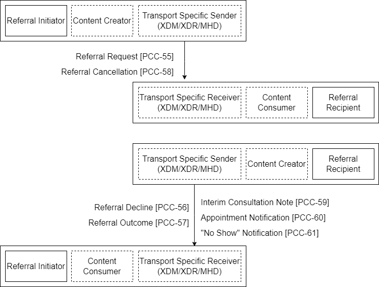
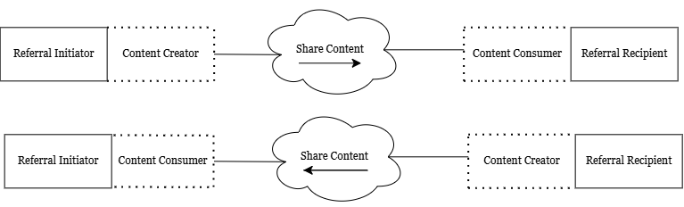

17 360 Exchange Closed Loop Referral (360X)
The goal of this profile is to enable improved care coordination between providers utilizing different Electronic Health Record technology (EHRT) / Health Information technology (HIT) when a patient is referred from one provider to another, and when the expectation is that the patient will eventually return to the referring provider for continued care. In particular, the 360X Profile seeks to enable providers — using existing health data exchange standards and technologies — to exchange:
- referral requests containing relevant patient clinical information
- result of referral containing relevant patient clinical information
from within their EHRT workflow, regardless of the EHRT used. This will allow providers to communicate electronically the related patient information even if utilizing different EHRT/HIT. This scope indicates that the 360X Project includes defining the transport and content of:
- the Referral Request
- the Result of Referral
- additional information to facilitate the referral process workflow, and the closing of the loop
17.1 360X Actors, Transactions, and Content Modules
This section defines the actors, transactions, and/or content modules in this profile. General definitions of actors are given in the Technical Frameworks General Introduction Appendix A at http://ihe.net/TF_Intro_Appendices.aspx.
17.1.1 Actors and Transactions
Figure 17.1-1 shows the actors directly involved in the 360X Profile and the relevant transactions between them. If needed for context, other actors that may be indirectly involved due to their participation in other related profiles are shown in dotted lines. Actors that have a mandatory grouping are shown in conjoined boxes.

Figure 17.1-1: 360X Actor Diagram
Table 17.1-1 lists the transactions for each actor directly involved in the 360X Profile. To claim compliance with this profile, an actor shall support all required transactions (labeled “R”) and may support the optional transactions (labeled “O”). Note that receiving an optional transaction that is not supported, must not trigger an error condition.
Table 17.1-1: 360X Profile - Actors and Transactions
| Actors | Transactions | Actions | Optionality | Reference |
|---|---|---|---|---|
| Referral Initiator | Referral Request PCC-55] | Send Referral Request / Receive Accept or Decline | R | PCC TF-2: 3.55 |
| Referral Decline [PCC-56] | Receive Decline of Referral Request | R(see note 1) | PCC TF-2: 3.56 | |
| Referral Outcome [PCC-57] | Receive Referral Outcome | R(See note 1) | PCC TF-2: 3.57 | |
| Referral Cancellation [PCC-58] | Send Request for Cancellation / Receive Cancellation Confirmation | O(See note 2) | PCC TF-2: 3.58 | |
| Interim Consultation Note [PCC-59] | Receive Interim Consultation Note | R | PCC TF-2: 3.59 | |
| Appointment Notification [PCC-60] | Receive Appointment Notification | O | PCC TF-2: 3.60 | |
| No-Show Notification [PCC-61] | Receive “No Show” Notification | O | PCC TF-2: 3.61 | |
| Referral Recipient | Referral Request PCC-55] | Receive Referral Request / Send Accept or Decline | R | PCC TF-2: 3.55 |
| Referral Decline [PCC-56] | Send Decline of Referral Request | O(see note 3) | PCC TF-2: 3.56 | |
| Referral Outcome [PCC-57] | Send Referral Outcome | R | PCC TF-2: 3.57 | |
| Referral Cancellation [PCC-58] | Receive Request for Cancellation / Send Cancellation Confirmation | O(see note 4) | PCC TF-2: 3.58 | |
| Interim Consultation Note [PCC-59] | Send Interim Consultation Note | O | PCC TF-2: 3.59 | |
| Appointment Notification [PCC-60] | Send Appointment Notification | O | PCC TF-2: 3.60 | |
| No-Show Notification [PCC-61] | Send “No Show” Notification | O | PCC TF-2: 3.61 |
Note 1: When transaction 56 or 57 is received by the Referral Initiator, this signifies the end of the referral process, and it should be represented correspondingly in the initiator's system*.*
Note 2: A Referral Initiator may not have a workflow where a cancellation of the referral request is needed; that is why transaction 58 is optional. If transaction 58 is supported, then the Referral Initiator must support receiving a Cancellation Confirmation message, which signifies the end of the referral process (see note 1).
Note 3: A Referral Recipient must support sending a decline message as the initial response to a received referral request, if there is a reason that it cannot be accepted. Transaction 56 provides the optional ability of the Referral Recipient to send a decline message even after the referral request was initially accepted.
Note 4: A Referral Recipient may operate in a context where they cannot interrupt the referral process when they receive a request for cancellation message, and this is why receiving transaction 58 is optional. Even if in some circumstances the Referral Recipient can receive and process transaction 58, there is no requirement that a cancellation confirmation must always be sent, due to the timing of the cancellation request, for example.
17.1.2 Content Modules
Figure 17.1-2 shows the actors engaged in content sharing in the 360X Profile and the direction that the content is exchanged.
As already described in Figure 17.1-1, the actors from this profile are grouped with the Content Creator and Content Consumer Actors. The grouping of the content modules described in this profile to specific actors is described in more detail in the “Required Actor Groupings” section below.

Figure 17.1-2: 360X Actor Diagram
Table 17.1-2 lists the content options defined in the 360X Profile. To claim support with this profile, an actor shall support at least one of the listed options. Note that the required actor groupings add a requirement for the Content Consumer to support the Document Import Option for the corresponding option.
Table 17.1-2: 360X Profile - Actors and Content Options
| Actors | Content Option | Optionality | Reference |
|---|---|---|---|
| Referral Initiator/Content Creator | XDS-MS Referral Summary Option | O | PCC TF-2: 6.3.1.3 |
| C-CDA Option | O | C-CDA 2.1 IG | |
| Referral Initiator/Content Consumer | XPHR Option | O | PCC TF-2: 6.3.1.5 |
| C-CDA Option | O | C-CDA 2.1 IG | |
| Referral Recipient/Content Consumer | XDS-MS Referral Summary Option | O | PCC TF-2: 6.3.1.3 |
| C-CDA Option | O | C-CDA 2.1 IG | |
| Referral Recipient/Content Creator | XPHR Option | O | PCC TF-2: 6.3.1.5 |
| C-CDA Option | O | C-CDA 2.1 IG |
Note: A Referral Initiator SHALL support either the XDS-MS Referral Summary Option and XPHR Option, or the C-CDA Option, or both. A Referral Recipient SHALL support either the XDS-MS Referral Summary Option and XPHR Option, or the C-CDA Option, or both.
17.1.3 Actor Descriptions and Actor Profile Requirements
Most requirements are documented in Transactions (Volume 2) and Content Modules (Volume 3). This section documents any additional requirements on the 360X Profile's actors.
17.1.3.1 Referral Initiator
The Referral Initiator starts the closed loop referral by sending a referral request to the Referral Recipient. Once the referral request is sent, the Referral Initiator must be able to receive and process an acceptance or a decline.
If the referral is accepted, the Referral Initiator must still be able to accept and process a subsequent decline. The Referral Initiator must be able to receive and process an Interim Consultation Note, if one is sent by the Referral Recipient, as well as a Referral Outcome.
The Referral Initiator must accept all the optional transactions that may be sent by the Referral Recipient, but there is no requirement to process them.
If the Referral Initiator is able to send a Cancellation Request during any part of the workflow, it must be able to receive and process a Cancellation Confirmation, and it also must be able to proceed in a deterministic manner if the Referral Recipient sends a transaction different from a Cancellation Confirmation.
The Referral Initiator, as a Content Consumer, must implement the Document Import Option (see PCC TF-2: 3.1.2) for all CDA document types based on the supported content option(s), and may implement the Section Import Option (PCC TF-2: 3.1.3), and/or the Discrete Data Import Option (PCC TF-2: 3.1.3).
The following requirements apply to the Referral Initiator for all transactions:
The Referral Initiator shall provide a unique patient identifier with the initial referral request, and must use the same patient identifier in any subsequent communications throughout a single referral information exchange. This identifier shall be present in the metadata for the XD* submission set and document entries, and in the PID segment of the HL7 V2 messages. The identifier should be present in the CDA document header.
The Referral Initiator MUST use one of two options for the patient identifier:
- a unique patient identifier known to the Referral Initiator, which may or may not be known to the Referral Recipient. In the XD* Metadata, this identifier shall be present in the sourcePatientId attribute of each and every document entry.
- a unique patient identifier commonly known to both the Referral Initiator and the Referral Recipient. The method, by which this knowledge is obtained, is outside the scope of this implementation guide, and it may include communication with other parties, such as a regional HIE, an MPI, etc. In the XD* Metadata, this identifier shall be present in the patientId attribute of the submission set, and the patientId attribute of each and every document entry.
The Referral Initiator shall provide a unique identifier for the referral with the initial referral request, and must use the same referral identifier in any subsequent communications throughout a single referral information exchange. This identifier shall be present in the metadata for the XDM submission set and document entries, and in the ORC and OBR segments of the HL7 V2 messages. The identifier should be present in the CDA referral section.
17.1.3.2 Referral Recipient
The Referral Recipient must receive and process a referral request, which is sent by a Referral Initiator, and the Referral Recipient must be able to respond with either an acceptance or a decline.
Once a referral request is accepted, the Referral Recipient must be able to create and send a Referral Outcome. The Referral Recipient must be able to accept a Cancellation Request at any point of the workflow, and it must respond with either a Cancellation Confirmation, or with the next step of the workflow.
The Referral Recipient, as a Content Consumer, must implement the Document Import Option (see PCC TF-2: 3.1.2) for all CDA document types based on the content option(s) supported, and may implement the Section Import Option (PCC TF-2: 3.1.3), and/or the Discrete Data Import Option (PCC TF-2: 3.1.3).
The following requirements apply to the Referral Recipient for all transactions:
- The Referral Recipient MUST use the unique patient identifier provided in the initial referral request in any subsequent communications with the Referral Initiator throughout the information exchange for a specific referral. When sent by the Referral Recipient, this identifier shall be present in the patientId metadata attribute for the XDM submission set and the patientId attribute of each and every document entry, and in the PID segment of the HL7 V2 messages. The identifier may be present in the CDA document header.
- The Referral Recipient MAY provide another unique patient identifier in any subsequent communications for the purpose of simplifying future communications between the two systems. Any further use of additional patient identifiers is outside the scope of this profile.
- The Referral Recipient shall use the unique referral identifier provided in the initial referral request in any subsequent communications with the Referral Initiator throughout a single referral information exchange. This identifier shall be present in the metadata for the XD submission set and document entries, and in the ORC segment of the HL7 V2 messages. The identifier may be present in the CDA document header.
X.2.1 360X Actor Options
Options that may be selected for each actor in this profile are listed in the Table X.2-1. Dependencies between options when applicable are specified in notes.
Table X.2-1: 360X - Actors and Options
| Actor | Option Name | Reference |
|---|---|---|
| Referral Initiator | Scheduling Option | PCC TF-1: X.2.1.1 |
| Section Import Option1 | PCC TF-2: 3.1.3 | |
| Discrete Data Import Option1 | PCC TF-2: 3.1.4 | |
| XDM Transport Option2 | PCC TF-1: X.2.2.1 | |
| XDR Transport Option2 | PCC TF-1: X.2.2.2 | |
| MHD Transport Option2 | PCC TF-1: X.2.2.3 | |
| XDS-MS Referral Summary and XPHR Content Option3 | PCC TF-1: X.2.3.1 | |
| C-CDA Content Option3 | PCC TF-1: X.2.3.2 | |
| Referral Recipient | Scheduling Option | PCC TF-1: X.2.1.1 |
| Section Import Option1 | PCC TF-2: 3.1.3 | |
| Discrete Data Import Option1 | PCC TF-2: 3.1.4 | |
| XDM Transport Option2 | PCC TF-1: X.2.2.1 | |
| XDR Transport Option2 | PCC TF-1: X.2.2.2 | |
| MHD Transport Option2 | PCC TF-1: X.2.2.3 | |
| XDS-MS Referral Summary and XPHR Content Option3 | PCC TF-1: X.2.3.1 | |
| C-CDA Content Option3 | PCC TF-1: X.2.3.2 |
Note 1: Both actors must implement the Document Import Option (PCC TF-2: 3.1.2) as Content Consumers of CDA documents. The Section Import and the Discrete Data Import are optional in that case,
Note 2: The actor SHALL select at least one of the Transport options
Note 2: The actor SHALL select at least one of the Content options
X.2.1.1 360X Scheduling Option
The 360X Scheduling Option provides for simple bare-bones appointment sharing between the entities, which are participating in the referral workflow. In many cases, these entities may have other, more comprehensive means of sharing appointment information; therefore, the 360X Scheduling Option would not be needed.
One of the capabilities provided by the Scheduling Option is the notification of a patient no-show for an appointment scheduled as part of the fulfillment of the referral request. It is important to note that when the Scheduling Option is not used, and no other form of scheduling sharing is available, the Referral Recipient can indicate a no-show as the reason for a Referral Decline [PCC-56].
For the Referral Initiator to support the Scheduling Option, it must be able to receive and process the Appointment Notification and the No Show Notification transactions.
For the Referral Recipient to support the Scheduling Option, it must be able to create and send the Appointment Notification and the No Show Notification transactions.
X.2.2 360X Transport Options
The 360X Profile requires the use of one of the following transport mechanisms for 360X. Implementers of the profile may support more than one transport mechanisms.
X.2.2.1 XDM Option
The XDM Option groups the 360X actors and transactions with the corresponding XDM actors and transactions. See Section X.3.1.
X.2.2.2 XDR Option
The XDR Option replaces the ITI XDM actors and associated transaction with the corresponding XDR actors and associated transaction. See Section X.3.2.
X.2.2.3 MHD Option
The MHD Option replaces the ITI XDM actors and associated transaction with the corresponding MHD actors and associated transaction. See Section X.3.3.
X.2.3 360X Content Options
The content options described below provide the requirements for sharing the clinical information required by the [PCC-55], [PCC-57] and [PCC-59] transactions.
X.2.3.1 XDS-MS Referral Summary and XPHR Option
This option constrains the clinical information sent in [PCC-55] to use the XDS-MS Referral Summary document template (template ID 1.3.6.1.4.1.19376.1.5.3.1.1.3). The XPHR document template (template ID 1.3.6.1.4.1.19376.1.5.3.1.1.5) shall be used in the [PCC-57] and [PCC-59] transactions.
X.2.3.2 C-CDA Option
This option constrains the clinical information to the document templates described in the HL7 Implementation Guide for CDA Release 2: Consolidated CDA Templates for Clinical Notes (US Realm), DSTU Release 2.1. The transaction definition in PCC TF-2: 3.55, PCC TF-2: 3.57, and PCC TF-2: 3.59 contain further discussion on the applicability of individual templates.
X.3 360X Actor Groupings
The actor groupings represent the following requirement for implementing the 360X Profile: all implementations must implement at least one of the optional actor groupings, and may implement two or more of the optional actor groupings.
X.3.1 Optional Actor Groupings — XDM Option
When supporting this option, the actors of this profile are grouped with both the XDM actors, and the generic Content Consumer and Content Creator Actors (as shown in Figure X.1-1, the 360X Action Diagram).
An actor from this profile (Column 1) shall implement all of the required transactions and/or content modules in this profile in addition to all of the transactions required for the grouped actor (Column 2).
Section X.5 describes additional groupings that may be of interest for security considerations and Section X.6 describes some optional groupings in other related profiles.
Table X.3-1: 360X - Required Actor Groupings
| 360X Actor | Actor to be grouped with | Reference | Content Bindings Reference |
|---|---|---|---|
| Referral Initiator | ITI XDM Portable Media Creator with options:ZIP over EmailZIP Over Email Response | ITI TF-1: 16.1ITI TF-1: 16.2.3ITI TF-1: 16.2.4 | |
| ITI XDM Portable Media Importer with options:ZIP over EmailZIP Over Email Response | ITI TF-1: 16.1ITI TF-1: 16.2.3ITI TF-1: 16.2.4 | ||
| Content Consumer with Document Import Option | PCC TF-2:3.1.2 | See Note 1 | |
| Referral Recipient | ITI XDM Portable Media Importer with options:ZIP over EmailZIP Over Email Response | ITI TF-1: 16.1ITI TF-1: 16.2.3ITI TF-1: 16.2.4 | |
| ITI XDM Portable Media Creator with options:ZIP over EmailZIP Over Email Response | ITI TF-1: 16.1ITI TF-1: 16.2.3ITI TF-1: 16.2.4 | ||
| Content Consumer with Document Import Option | PCC TF-2:3.1.2 | See Note 1 |
Note 1: The Content Consumer requirements are for the CDA documents described as payload for some of the 360X transactions, and only apply in the case when a patient referral is accepted by the Referral Recipient
X.3.2 Optional Actor Groupings — XDR Option
The XDR Option for 360X replaces the XDM actor grouping with the corresponding XDR actor grouping.
An actor from this profile (Column 1) claiming the XDR Option shall implement all of the required transactions and/or content modules in this profile in addition to all of the transactions required for the grouped actor (Column 2).
Section X.5 describes additional groupings that may be of interest for security considerations and Section X.6 describes some optional groupings in other related profiles.
Table X.3-2: 360X — XDR Actor Groupings
| 360X Actor | Actor to be grouped with | Reference | Content Bindings Reference |
|---|---|---|---|
| Referral Initiator | ITI XDR Document Source | ITI TF-1: 15.1 | |
| ITI XDR Document Recipient | ITI TF-1: 15.1 | ||
| Content Consumer with Document Import Option | PCC TF-2:3.1.2 | See Note 1 | |
| Referral Recipient | ITI XDR Document Recipient | ITI TF-1: 15.1 | |
| ITI XDR Document Source | ITI TF-1: 15.1 | ||
| Content Consumer with Document Import Option | PCC TF-2:3.1.2 | See Note 1 |
Note 1: The Content Consumer requirements are for the CDA documents described as payload for some of the 360X transactions, and only apply in the case when a patient referral is accepted by the Referral Recipient
X.3.3 Optional Actor Groupings — MHD Option
The MHD Option for 360X replaces the XDM actor grouping with the corresponding MHD actor grouping.
An actor from this profile (Column 1) claiming the MHD Option shall implement all of the required transactions and/or content modules in this profile in addition to all of the transactions required for the grouped actor (Column 2).
Section X.5 describes additional groupings that may be of interest for security considerations and Section X.6 describes some optional groupings in other related profiles.
Table X.3-3: 360X — MHD Actor Groupings
| 360X Actor | Actor to be grouped with | Reference | Content Bindings Reference |
|---|---|---|---|
| Referral Initiator | ITI MHD Document Source | ITI TF-1: 33.1 | See Note 1 |
| ITI MHD Document Recipient | ITI TF-1: 33.1 | See Note 1 | |
| Content Consumer with Document Import Option | PCC TF-2:3.1.2 | See Note 2 | |
| Referral Recipient | ITI MHD Document Recipient | ITI TF-1: 33.1 | See Note 1 |
| ITI MHD Document Source | ITI TF-1: 33.1 | See Note 1 | |
| Content Consumer with Document Import Option | PCC TF-2:3.1.2 | See Note 2 |
Note 1: The MHD Profile supplement for trial implementation is available at IHE.net.
Note 2: The Content Consumer requirements are for the CDA documents described as payload for some of the 360X transactions, and only apply in the case when a patient referral is accepted by the Referral Recipient.
X.4 360X Overview
X.4.1 Concepts
The 360X Profile is a combination of a set of transactions and content modules, which enables the Referral Initiator and the Referral Recipient to exchange clinical information about the patient for whom the referral is made, and to manage the referral workflow at an abstract level.
The following state transition diagrams describe a series of generalizable workflow steps found in outpatient provider settings. These diagrams are used to define the requirements for the transactions in this profile, which allows it to support a diverse range of possible workflow sequences.
Figure X.4.1-1: 360X State Transitions from the point of view of the Referral Initiator
The state transitions from the Referral Initiator’s point of view show the possible actions and expectations for the Referral Initiator. It shows that Referral Decline can be received throughout the workflow, and the Referral Initiator must be prepared to deal with these “delayed” declines. Similarly, the Referral Initiator may request a cancelation at any time during the workflow, but the response may not necessarily be a Cancelation Confirmation. For example, the Referral Recipient may be in the process of completing the Referral Request when a Cancelation Request is sent, so instead of a Cancelation Confirmation, the Referral Initiator will receive a Referral Outcome.
The Referral Recipient’s possible actions and expectations are shown in the corresponding diagram as well.
Figure X.4.1-2: 360X State Transitions from the point of view of the Referral Recipient
X.4.2 Use Cases
The 360X Profile targets the use case of a referral from a primary care provider (PCP) to a specialist for ambulatory care consultation. The need to handle a wide variety of workflows that may depend on specialty, practice management, or care setting, however, makes most of the transactions and content applicable to other use cases as well.
One key requirement for the closed loop referral is the concept of End of Care, which is when the referral is considered completed. In the case of referrals for continued care, the closing of the loop can still be present even if there is no specific End of Care. In such cases, the loop can be considered closed when the referral has been accepted, and the Referral Outcome is a care plan that is shared with the Referral Initiator.
When there is a secondary referral (specialist to specialist), the 360X Profile covers the process as a new separate referral. In such cases, the communications with the original Referral Initiator (e.g., the PCP) regarding the secondary referral is essential for proper patient care. While deliberate orchestration of these communications is out of scope for this profile, as part of the original referral the Referral Recipient can send an updated plan of care with information about the secondary referral (via either a Referral Outcome, or an Intermediate Consultation Note).
X.4.2.1 Use Case #1: PCP to Specialist
This use case describes the referral of a patient from his PCP to a cardiologist.
X.4.2.1.1 PCP to Specialist Use Case Description
Mr. Packton, age 58, presents to Dr. Allen's office on September 4th, 2017, with complaints of shortness of breath. The patient has a BMI of 30, no history of smoking, no complaints of chest pain, no physical signs of respiratory and cardiac problems, and a familial history of coronary artery disease.
Dr. Allen, his PCP, orders a referral to a cardiologist, stating the clinical question as “Determine the origin of Mr. Packton’s shortness of breath”. Based on the practice's workflows and the PCP's system's handling of referrals, a referral package is created which contains the above noted findings, demographic information, patient history, lab results, and patient insurance.
The referral request is sent to the cardiologist's practice, with the additional indication that the patient is to be seen within a week. The cardiology practice receives the referral request, sends for and receives prior authorization, and based on the practice's workflows and their system's handling of referral requests, an affirmative response to the request is sent to Dr. Allen's practice.
Dr. Brown's office at the cardiology practice calls Mr. Packton, and schedules an appointment on September 7th, 2017. Based on the practice's workflows and their system's handling of referral requests, a notification is sent of the appointment date/time to Dr. Allen. Mr. Packton keeps the appointment with Dr. Brown, and unfortunately he is diagnosed with coronary artery disease and a cardiac catheterization is scheduled.
Dr. Brown's initial consultation note is completed and it is sent to Dr. Allen, answering the clinical question and stating the date of the cardiac catheterization. After the catheterization is performed, the results are reviewed by Dr. Brown, and a final consultation note is sent to Dr. Allen, including a suggested plan of care. Dr. Allen reviews the consultation notes and closes the referral loop.
X.4.2.1.2 PCP to Specialist Process Flow
Referral Initiator PCP
Referral Recipient Specialist
Referral Request [PCC-55]
Order referral
Internal action 2
Accept Referral [PCC-55]
Process request
Internal action 2
Schedule appointment
Internal action 2
Appointment Notification [PCC-60]
Interim Consultation Note [PCC-59]
Specialist visit
Internal action 2
Close referral
Internal action 2
Referral Outcome [PCC-57]
Cardiac Catheterization
Figure X.4.2.1.2-1: Example Process Flow in the 360X Profile
The process flow shows that the Referral Initiator is limited to sending the initial referral request. While it is possible that there might be further interactions between the Referral Initiator and the Referral Recipient between the acceptance of the referral and the patient’s visit with the Referral Recipient, these types of interactions are out of scope for the profile. See Section X.6 for suggestions on how other IHE profiles may be helpful to meet such needs.
X.4.2.2 Use Case #2: Public Health to Specialist
The early hearing detection and intervention (EHDI) clinical protocol needs the ability to communicate follow-up diagnostic evaluation referral and service information between public health and audiological providers and to update the Hearing Plan of Care document as screening, testing, and other interventions are performed.
X.4.2.2.1 Public Health to Specialist Use Case Description
Information flows among providers (birthing facilities, pediatricians and specialists) and public health agencies concerning early hearing detection and intervention (EHDI) have been inconsistent and unreliable. Communicating hearing screening and follow-up information including important next steps and test results for an infant is not done effectively leading to data errors, missed information and missed services.
Newborn hearing screening (NHS) and follow up services are initiated based on public health (PH) guidelines. At birth, the birthing center provider initiates the NHS so that the screening is performed. The screening result, along with other important patient demographic and clinical information, is submitted to the Public Health EHDI program. The Public Health EHDI program generates a Hearing Plan of Care (HPoC) document that includes important next-step care guidelines and sends it to the infant’s primary care provider (PCP). Children who do not pass the NHS are referred to follow-up audiological diagnostic tests, either by the PH EHDI program or by the PCP. After the infant receives the recommended audiological diagnostic service, the audiological provider sends the results to PH and the HPoC is updated.
X.4.2.2.2 Public Health to Specialist Process Flow
There are two process flows shown for this use case. The first process flow diagram shows the case when the public health agency sends the referral directly to the audiological provider.
Send Referral Outcome [PCC-57]
Send Referral Request [PCC-55]
Referral Recipient Audiological Service Provider
Referral Initiator Public Health
Accept Referral [PCC-55]
Update HPoC and/or patient record
Figure X.4.2.2.2-1: Example Process Flow in the 360X Profile
The second process flow diagram shows how the referral is managed by the PCP.
Send Referral Outcome [PCC-57]
Send Referral Request [PCC-55]
Referral Recipient Audiological Service Provider
Referral Initiator PCP
Accept Referral [PCC-55]
Update HPOC
Share referral outcome
Scope boundary for 360X
Share content (HPOC or screening result)
Content Creator PH
Update patient record
Figure X.4.2.2.2-2: Example Process Flow in the 360X Profile
X.5 360X Security Considerations
The 360X Profile actors are grouped with the Portable Media Creator and Portable Media Importer Actors of the XDM Profile, and requires the ZIP over Email and Zip over Email Response Options. In particular, the use of S-MIME encryption and signature requirements are applied to this profile.
Sections X.1.3.1 and X.1.3.2 address the management of patient and referral identification for the purposes of this profile.
X.6 360X Cross Profile Considerations
X.6.1 ROL — Referral/Order Linking
In cases when there is a need for additional communication from the Referral Initiator to the Referral Recipient, these actors can be grouped together with the Order Placer and Order Filler Actors, respectively, of the ROL Profile. Using the same requirements for patient and referral identification described in Sections X.1.3.1 and X.1.3.2, these additional transactions can communicate information such as additional test results, which have been received by the Referral Initiator before the patient has been seen by the Referral Recipient.
X.6.2 XBeR-WD — Cross Enterprise Basic eReferral Workflow Definition
The 360X Profile, and the XBeR-WD Profile share similar use cases, but differ in the way the workflow information is conveyed. The use of Workflow Documents for workflow information, as required by the underlying XWD Profile in XBeR-WD, is not supported by the current HIT infrastructure in the US. The 360X Profile uses HL7 V2 messages, which have been well established in areas like laboratory, pathology, and radiology order workflows, including in implementation guides required by US national initiatives (e.g., the LOI and LRI implementation guides).
X.6.3 XDS/XCA and Use of 360X with Intermediaries
The scope of the 360X Profile is for referrals to a known recipient. There are some circumstances where the destination for the referral is behind an intermediary, which provides additional services to the recipient. In such cases XDS and/or the XCA IHE profiles can play a complementary role to complete the closed loop.
From the point of view of the Referral Initiator, the intermediary is the Referral Recipient, and the Referral Request is sent from the Referral Initiator to the intermediary. When the intermediary is an IHE actor that has grouped the Referral Recipient with an XDS Registry/Repository, or with an XCA gateway, then the destination system can query the intermediary for available referrals, and when one is successfully retrieved and accepted, then the intermediary sends an Accept message to the Referral Initiator. The same pattern is then used for all other transactions.
It is important to note that this type of intermediary allows for “open referrals”, where the intermediary also plays the role of assisting with determining the ultimate destination of the referral. This includes patient-mediated referrals. In such cases, multiple potential destinations can query the intermediary for appropriate referrals, and specific rules can determine how a particular destination can “claim” a referral.